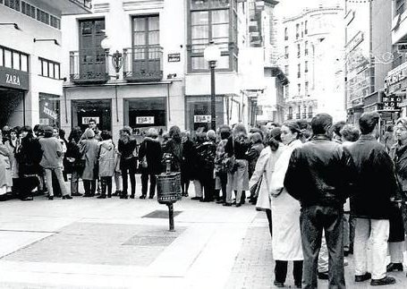
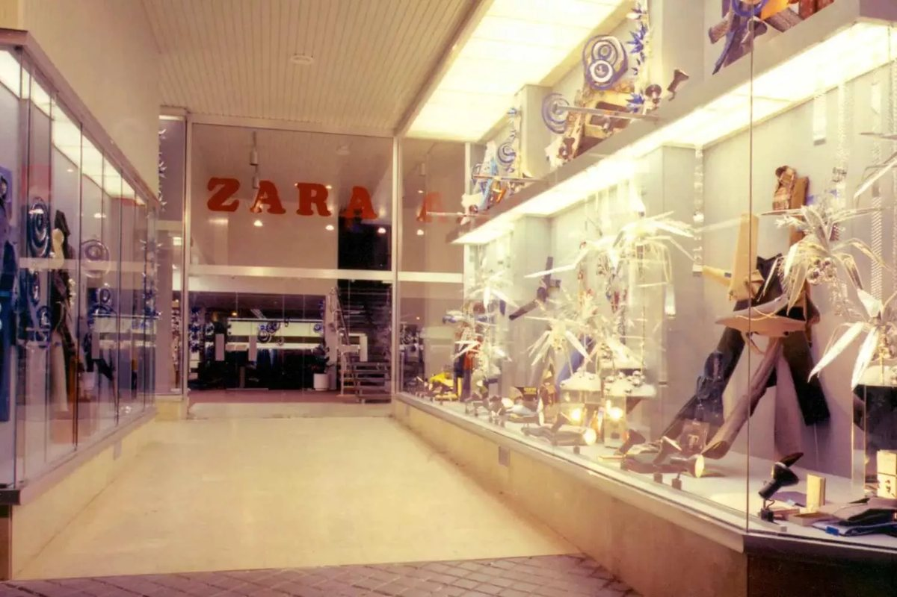
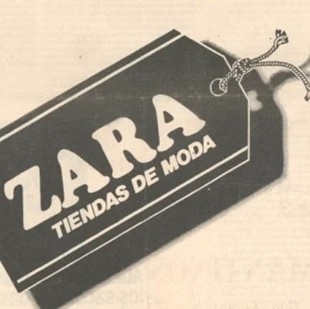
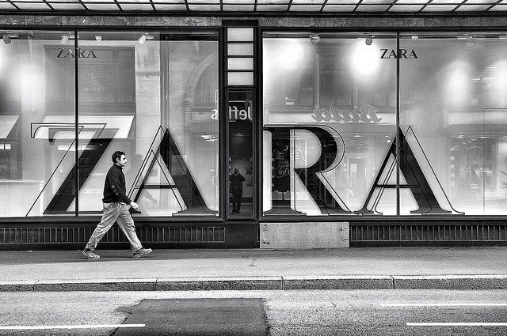
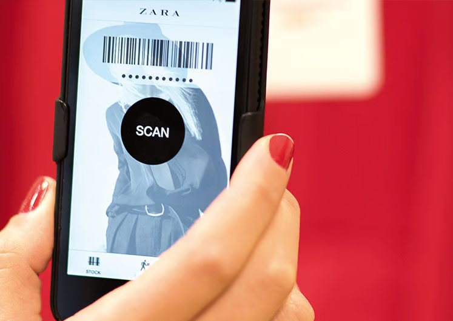
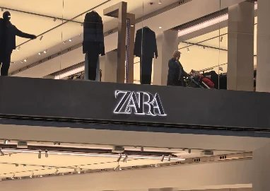
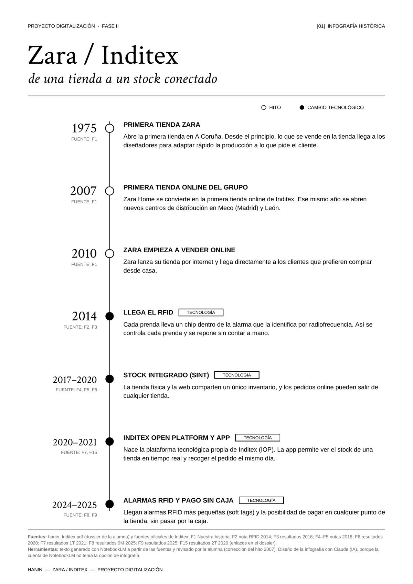

Historia
De una tienda al mundo
Todo empezó en 1975 con una tienda en A Coruña. Estos son los siete momentos que, para mí, mejor explican cómo Zara ha llegado a tenerlo todo conectado.

Los puntos negros son cambios tecnológicos. Pulsa un año para leerlo.
Siete hitos
Para mi pregunta, los más importantes son el RFID (2014), el stock integrado (2017–2020) y la plataforma propia de Inditex (2020–2021), porque cambiaron la forma de controlar la ropa.
Amancio Ortega abre la primera Zara en la calle Juan Flórez de A Coruña. Desde el principio, lo que se vende en la tienda llega a los diseñadores.
Qué necesidad resolvía: Vender directamente al cliente y saber qué quiere.
Qué resultado tuvo: Es el origen del modelo que conecta tienda y diseño.
Zara Home se convierte en la primera tienda online de Inditex. Ese año se abren centros de distribución en Meco (Madrid) y León.
Qué necesidad resolvía: Empezar a vender por internet y tener más capacidad logística.
Qué resultado tuvo: Primera experiencia del grupo en la venta online.
Fuente: [F1]
En septiembre, Zara lanza su tienda por internet.
Qué necesidad resolvía: Llegar a los clientes que prefieren comprar desde casa.
Qué resultado tuvo: A final de 2010 ya vendía online en 16 países europeos.
Fuente: [F1]
Cada prenda lleva un chip dentro de la alarma que la identifica por radiofrecuencia. Una antena puede leer muchas prendas a la vez.
Qué necesidad resolvía: Saber qué tallas y modelos hay que reponer sin contar a mano.
Qué resultado tuvo: En 2014 ya estaba en más de 700 tiendas Zara, y en 2016 en todas.
La tienda y la web comparten el mismo inventario (sistema SINT). Un pedido online puede salir del almacén o de cualquier tienda.
Qué necesidad resolvía: No perder ventas por no tener una talla en un sitio concreto.
Qué resultado tuvo: En 2020 el sistema ya funcionaba en 5.777 tiendas.
Inditex crea su propia plataforma tecnológica (IOP). La app permite ver el stock de una tienda, recoger el mismo día o encontrar una prenda.
Qué necesidad resolvía: Unir en un mismo sistema la tienda, la web y los datos.
Qué resultado tuvo: Según Inditex, todo el inventario está disponible para el cliente en tiempo real.
Cómo han cambiado las tiendas
Ayer


Hoy




La infografía
La misma historia en una sola imagen. El texto lo generé con NotebookLM a partir de mis fuentes y lo revisé con mi dossier: corregí el hito de 2007, que la IA había explicado de forma muy general.
Y si quieres la versión contada por la propia empresa, el canal oficial Inditex People tiene el vídeo «Inditex · Historia». [F17]
